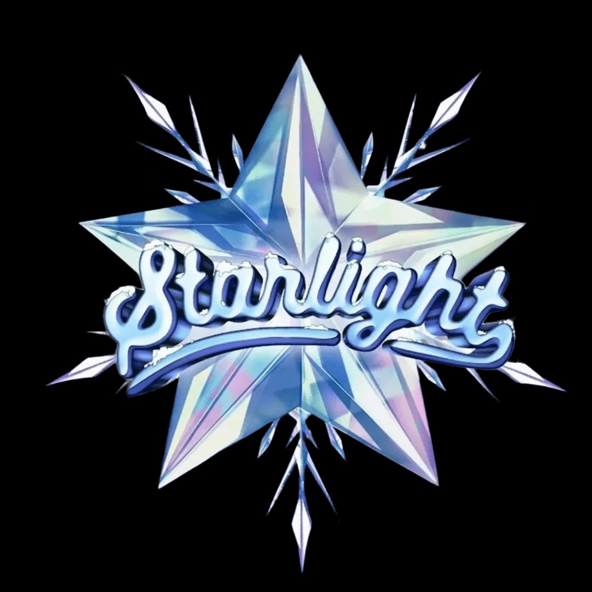

Starlight UMN 2025
Starlight UMN adalah salah satu acara seni dan kreativitas terbesar di Universitas Multimedia Nusantara yang menampilkan bakat-bakat luar biasa dari mahasiswa.
Kembali ke Portofolio
Starlight UMN adalah salah satu acara seni dan kreativitas terbesar di Universitas Multimedia Nusantara yang menampilkan bakat-bakat luar biasa dari mahasiswa.
Kembali ke Portofolio